Funktionen
Alles, was Trax kann, sortiert danach, wann du es nutzt.
Beim Legen
Der Fährtenleger zeichnet den Weg und die Gegenstände auf.
- FährtenalterEin Countdown auf dem Sperrbildschirm und eine Meldung fünf Minuten, bevor die Fährte bereit ist.
- Meter zwischen GegenständenSieh beim Legen, wie weit es seit dem letzten Gegenstand ist.
- VerleitungsfährtenLege eine frischere Fährte quer darüber, mit einer Meldung vor der Kreuzung.
- IGP-Stufen und VorlageWähle eine Stufe von IGP-V bis FH 3, sieh die Schritte im Vergleich zur Vorgabe und lege die Fährte nach einer Vorlage auf der Karte.
- SchweißfährtenAnschuss, Wundbett, Wild und Fluchtrichtung, mit eigenen Tasten beim Legen.
- Fährtenpläne iPhoneZeichne die Fährte zu Hause auf der Karte und lege sie draußen nach Plan.
- Stopp gedrückt haltenDie Fährte wird nicht aus Versehen beendet.
Während der Hund arbeitet
Der Hundeführer folgt dem Hund, das Handy in der Tasche.
- SprachansagenDu hörst es, wenn du dich einem Gegenstand näherst.
- Abkommen von der FährteDas Handy vibriert, wenn ihr von der Fährte abkommt.
- Funde automatischDer Gegenstand wird als gefunden erfasst, wenn du ihn erreichst.
- BlindfährtenFährte und Meldungen bleiben verborgen, bis du stoppst.
- VerweisenLiegen, Sitzen, Stehen, Aufnehmen oder vorbei, mit einem Tipp nach „Gefunden“.
- NachtmodusRotes Licht auf dem Bildschirm, mit gut sichtbarer Fährte und Position.
- Gegenstands- und FlächensucheMarkiere ein Feld auf der Karte und suche nach Gegenständen oder Personen, mit Zeitlimit und eigener Statistik.
Danach
Sieh, was passiert ist und wie sich dein Hund entwickelt.
- FährtendetailsGroße Karte mit Wiedergabe und Reitern für Übersicht, Abweichung, Gegenstände und Bedingungen.
- Die HundeseiteKennzahlen, Ziele, Trainingselemente und die Entwicklung jedes Hundes.
- Bewertung der FährteNote, Schwierigkeit und ein Lernpunkt nach jeder Fährte.
- TrainingselementeLege eigene an, zum Beispiel „Spitzer Winkel“, und bewerte sie nach der Fährte.
- Wind und WetterEin Windpfeil auf der Karte und das Wetter, wenn dein Hund die Fährte beginnt.
- Fährten bearbeitenKürze Anfang und Ende einer Fährte im Nachhinein und korrigiere Funde später.
Teilen und deine Daten
Kein Konto. Deine Fährten bleiben auf deinem Handy.
- Fährte an den Hundeführer schickenSchick die Fährte per AirDrop oder E-Mail, und sie öffnet sich auf dem anderen Handy direkt in Trax.
- Fährte blind sendenDer Empfänger sieht nur den Start, bis die Fährte gearbeitet ist.
- Mit einem Foto deines Hundes teilenTrax legt die Fährte, die Gegenstände und die Zahlen über ein Foto aus deiner Mediathek.
- Mehrere Fährten in einem PDFExportiere viele Fährten zusammen, zum Beispiel für deine eigene Dokumentation.
- SicherungAutomatische Kopie aller Fährten und Hunde in iCloud Drive.
- Sprache wählenDeutsch, Englisch, Norwegisch oder Schwedisch, unabhängig von der Sprache des Handys.
Teile die Fährte mit einem Foto deines Hundes
Wähle ein Foto aus deiner Mediathek, und Trax legt die Fährte, die Gegenstände und die Zahlen darüber. Teile es als Story oder Beitrag und wähle die Farben der Fährte selbst. Wenn du lieber nur die Fährte zeigen willst, bekommst du sie auf grünem Hintergrund.
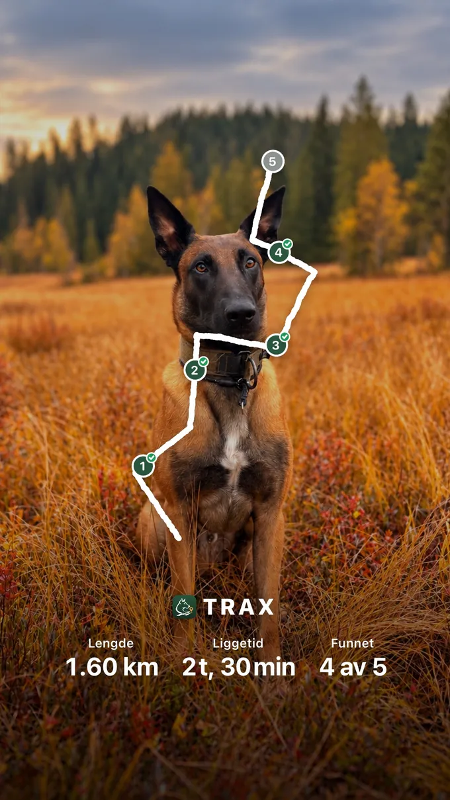
Schick die Fährte an den Hundeführer
Fährtenleger und Hundeführer müssen nicht dasselbe Handy benutzen. Tippe auf „An einen anderen Trax-Nutzer“ und schick die Fährte per AirDrop oder E-Mail. Sie öffnet sich auf dem anderen Handy direkt in Trax und ist bereit zum Ausarbeiten. Ohne Konto und ohne Anmeldung.
Nimm AirDrop oder E-Mail, nicht Nachrichten. Wenn die Nachricht als SMS verschickt wird, kommt die Datei nicht an.
Bildschirmfotos
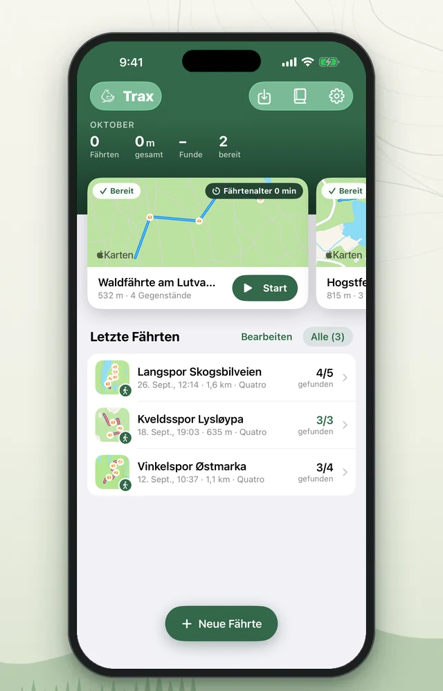
Alles an einem OrtDie Zahlen des Monats, startbereite Fährten und deine letzten Fährten. 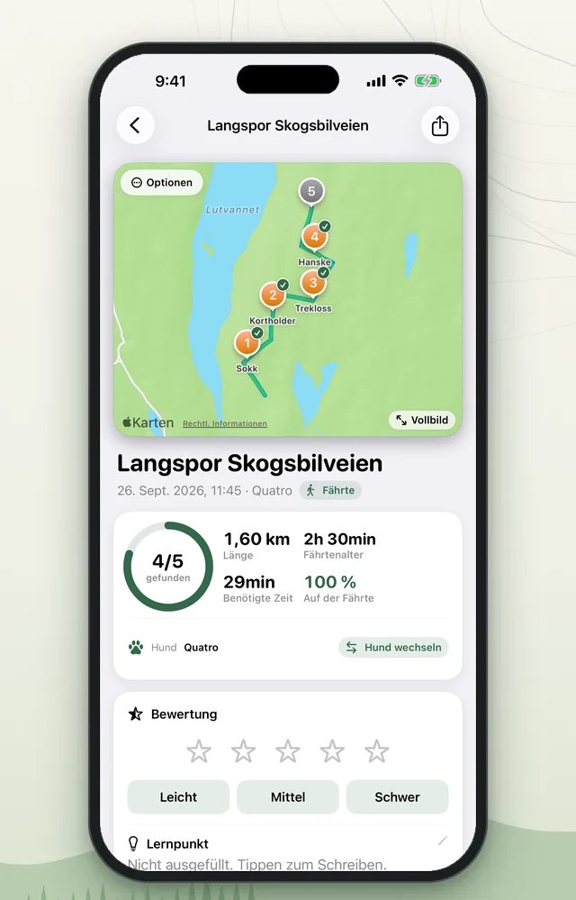
Die ganze Fährte auf einen BlickKarte, gefundene Gegenstände, Länge, Fährtenalter und wie viel der Fährte dein Hund gehalten hat. 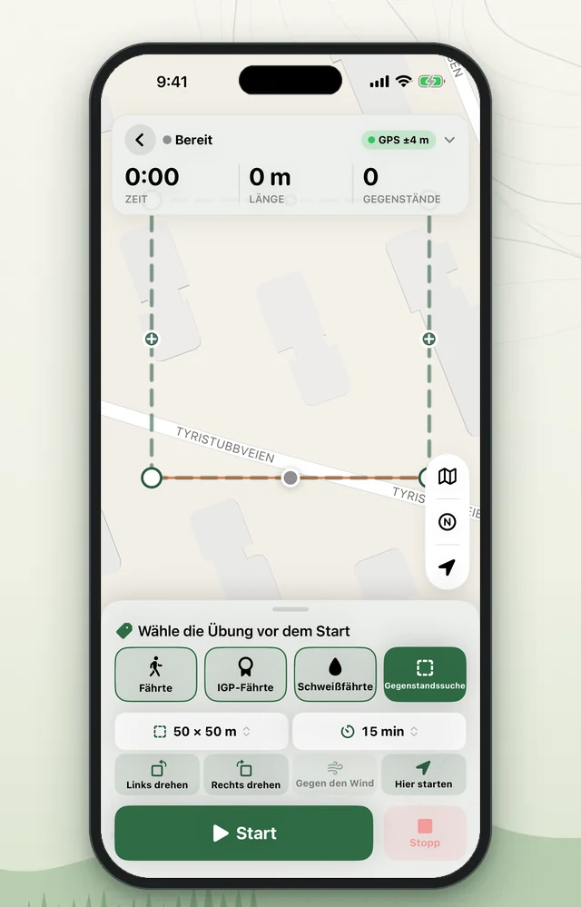
Übung wählenFährte, IGP-Fährte, Schweißfährte oder Gegenstandssuche. Zeichne das Feld auf der Karte und setze ein Zeitlimit. 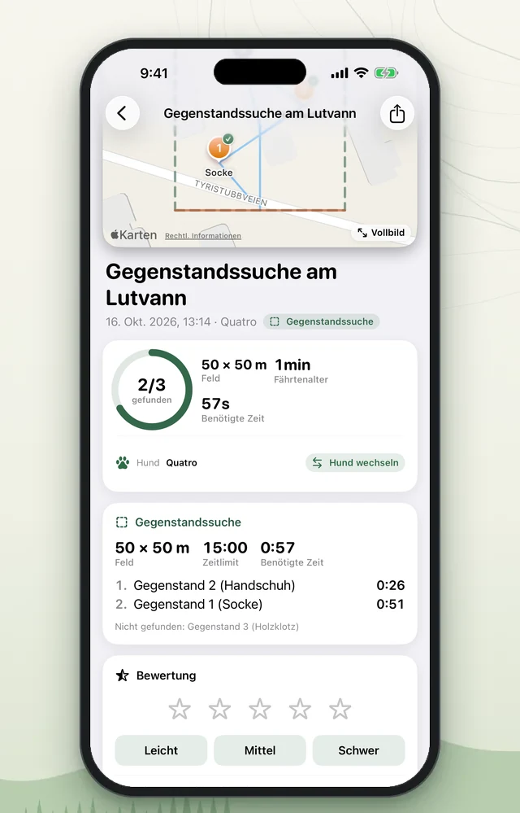
Gegenstandssuche und FlächensucheSieh, welche Gegenstände dein Hund gefunden hat und wie lange jeder Fund gedauert hat. 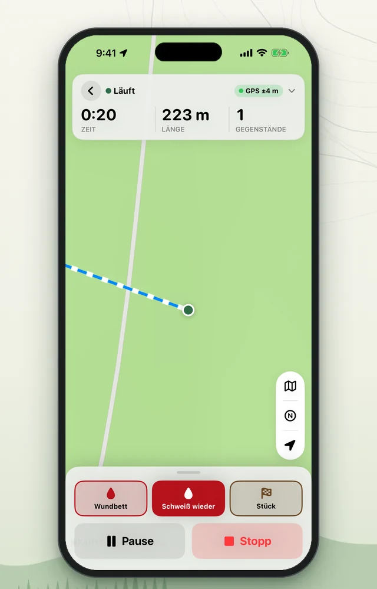
SchweißfährteMarkiere Anschuss, erneuten Schweiß und das Wild mit einem Tippen, während ihr die Fährte ausarbeitet. 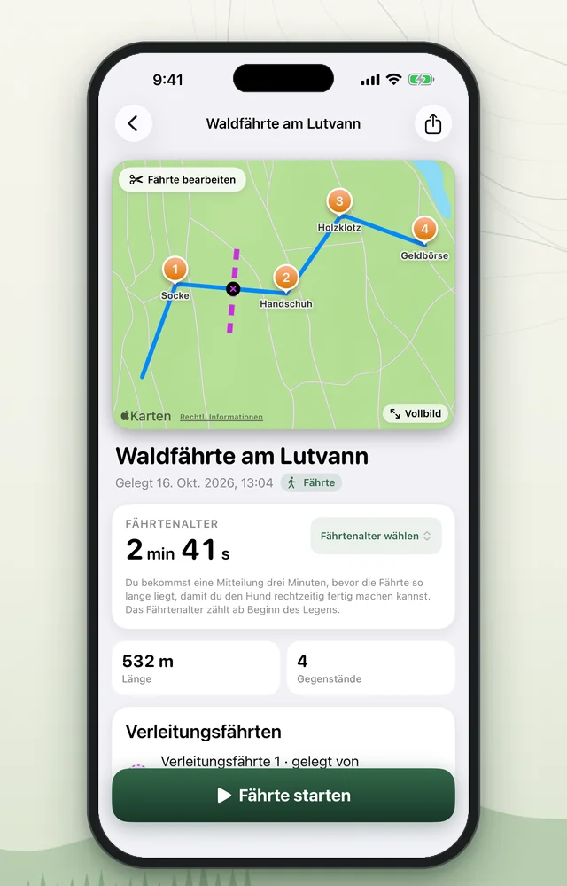
VerleitungsfährtenLege eine frischere Fährte quer über die erste und sieh das Fährtenalter bis zum Start herunterzählen. 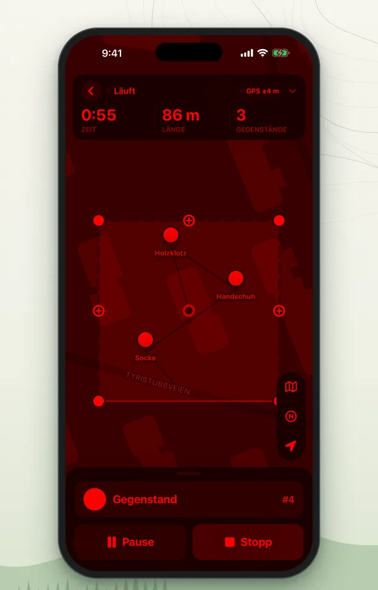
NachtmodusRotes Licht auf dem Bildschirm, wenn du im Dunkeln trainierst.
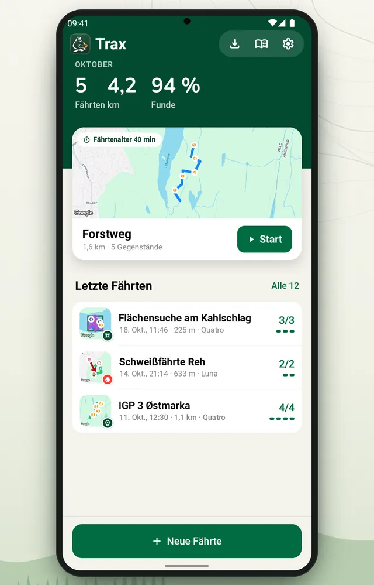
Alles an einem OrtDie Zahlen des Monats, startbereite Fährten und deine letzten Fährten. 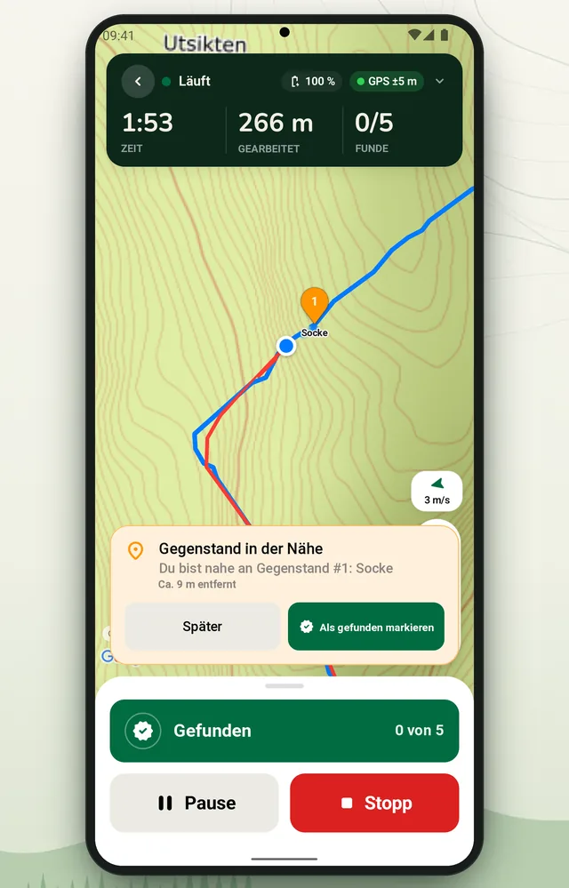
Funde unterwegs erfassenTrax meldet sich, wenn du dich einem Gegenstand näherst. Ein Tippen, und der Fund ist erfasst. 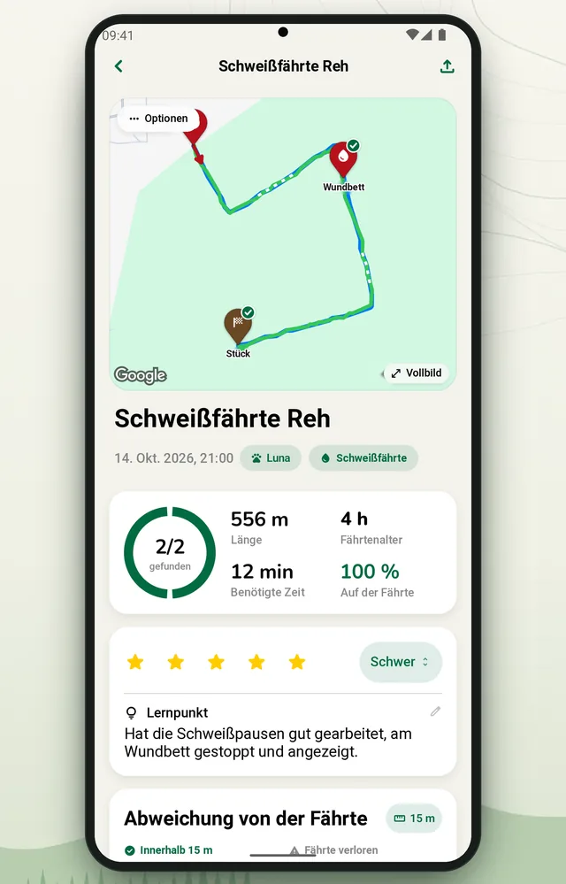
Die ganze Fährte auf einen BlickKarte, gefundene Gegenstände, Länge, Fährtenalter und wie viel der Fährte dein Hund gehalten hat. 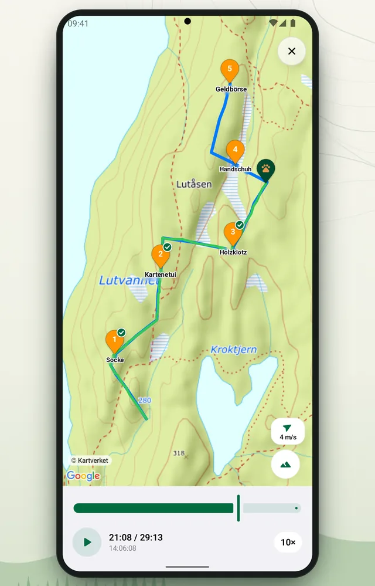
Fährte abspielenSieh die gelegte Fährte und den Weg des Hundes nebeneinander, bis zu 10x schnell. 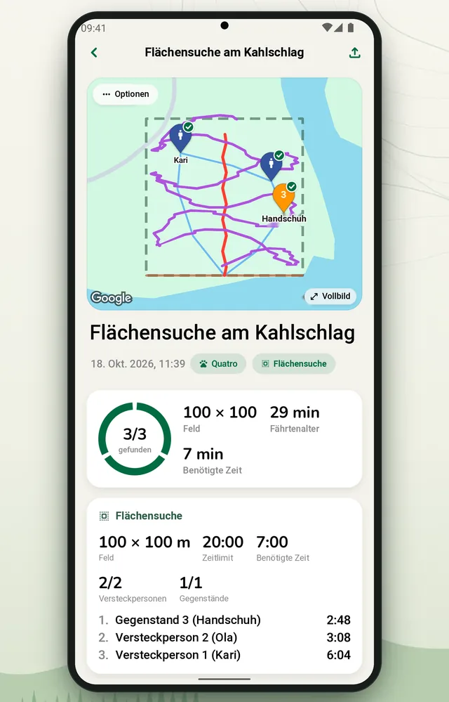
Gegenstandssuche und FlächensucheSieh, welche Gegenstände und Personen dein Hund gefunden hat, und die Zeit bis zu jedem Fund. 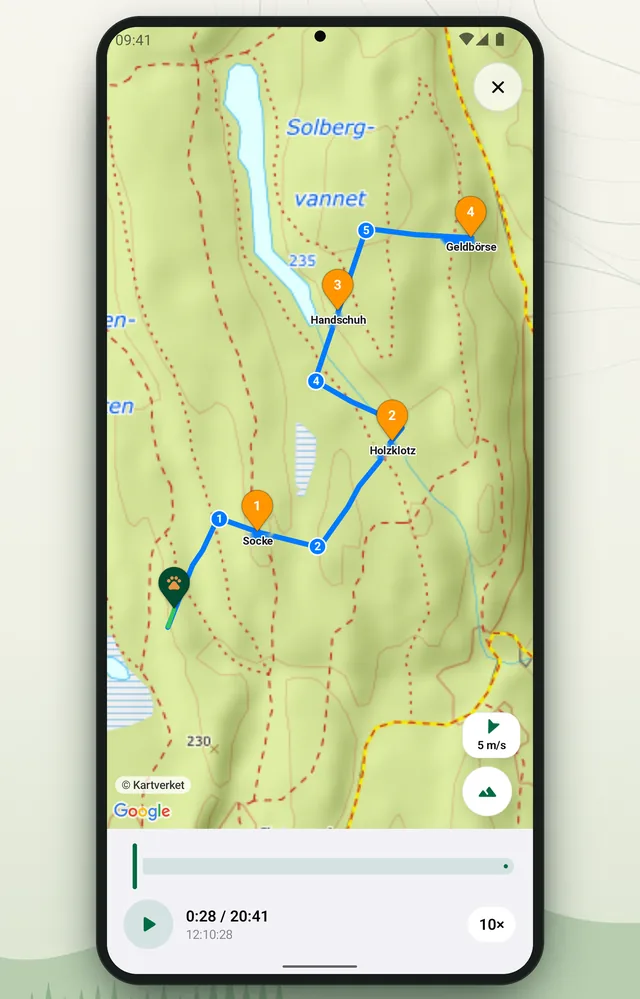
IGP-Fährten mit WinkelnNummerierte Winkel und Gegenstände, mit dem Weg des Hundes über der gelegten Fährte. 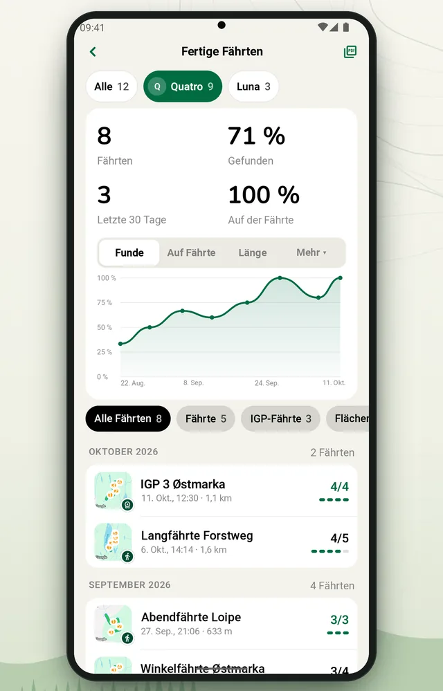
Entwicklung verfolgenFunde, wie gut dein Hund die Fährte gehalten hat, und Länge im Zeitverlauf, für jeden Hund. 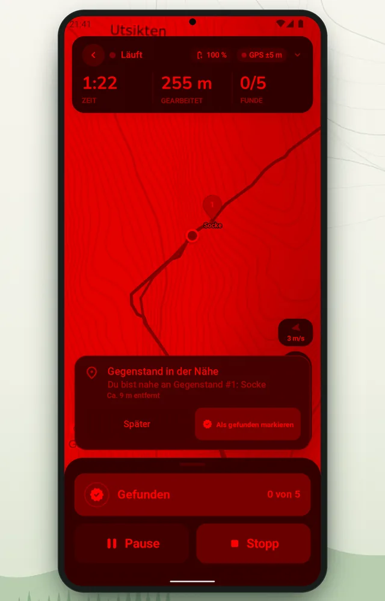
NachtmodusRotes Licht auf dem Bildschirm, wenn du im Dunkeln trainierst.